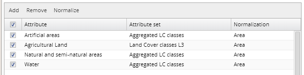
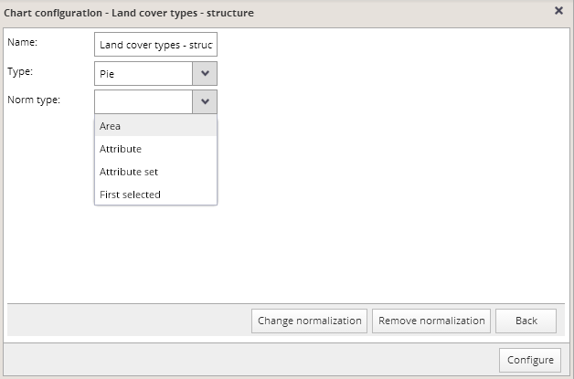
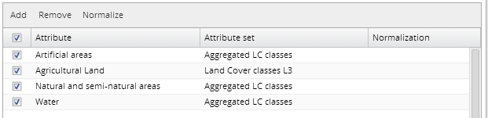

To enable a comparison of not only absolute, but also relative values of the attributes, including definition of the denominator attribute, a possibility for attribute normalization is provided.
By default, all attributes are normalized by the analytical unit area, when added to the chart attribute list, which is indicated by the text "Area" in the "Normalization" column in the chart configuration dialog.

This normalization can be removed or modified using the normalization dialog available after clicking on the "Normalize" button in the chart configuration dialog.

Attributes whose normalization should be removed or modified must be selected by first checking their check boxes in the chart configuration dialog. After that, open the normalization dialog by clicking the “Normalize” button and select the normalization type.
In case you do not want to normalize selected attributes, click the "Remove normalization" button at the bottom of the card and any normalizations of selected attributes will be removed; this will be indicated by empty "Normalization" column for corresponding attributes:

In case you want to normalize some attributes, PUMA platform provides the following normalization types:
Set the normalization properties and confirm it by clicking the "Change normalization" button at the bottom of the card.